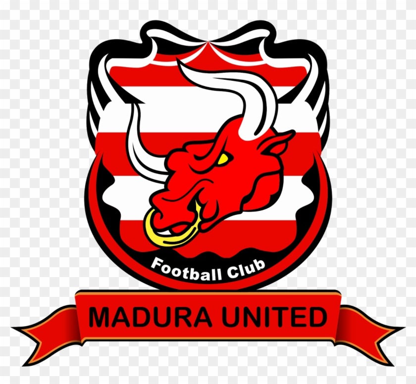
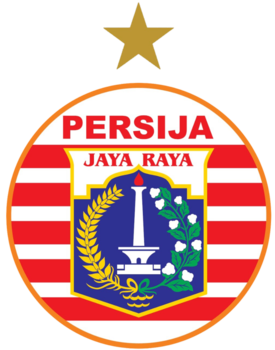

Arema FC
Arema FC (dahulu bernama Arema Cronus), atau biasa disebut dan dikenal sebagai Arema Malang, adalah sebuah klub sepak bola profesional yang berasal dari Malang, Jawa Timur, Indonesia. Arema didirikan pada tanggal 11 Agustus 1987, Arema
mempunyai julukan Singo Edan. Dalam Liga 1, Arema bermarkas di Stadion Kanjuruhan, Kabupaten Malang dan Stadion Gajayana, Kota Malang. Arema adalah tim sekota dari Persema Malang, Persekam Metro, dan Malang United.
Stadion : Kanjuruhan Malang
www.aremafc.com
Bhayangkara FC
Bhayangkara Football Club adalah sebuah tim sepak bola Indonesia yang dimiliki oleh Polri yang berbasis di Jakarta. Klub ini bermain di Liga 1. Klub ini juga memegang rekor sebagai klub dengan pergantian nama terbanyak di Indonesia,
semuanya karena dualisme yang pernah terjadi antara klub ini dengan klub Persebaya Surabaya pada rentang waktu 2010 sampai 2016.", "Borneo F.C. adalah klub sepak bola Indonesia yang berasal dari Samarinda, Kalimantan Timur, Indonesia.
Pada awal berdirinya klub ini bermain di Divisi Utama Liga Indonesia 2014 setelah mengakuisisi klub Perseba Super Bangkalan pada tanggal 7 Maret 2014, menggantikan Persisam Samarinda sebagai Klub asal samarinda, Kalimantan Timur
yang berkompetisi di liga teratas di Indonesia. Pada musim 2017, Pusamania Borneo F.C. mengganti nama klubnya menjadi Borneo F.C. untuk mengarungi kompetisi Liga 1.
Stadion : PTIK Jakarta
www.bhayangkarafc.id
Madura United

Madura United FC merupakan klub sepak bola asal Indonesia yang berbasis di Pamekasan, Madura. Klub ini sebelumnya bernama Pelita Bandung Raya yang pada waktu itu berlaga di Liga Super Indonesia. Pemilik Pelita Bandung Raya, Ari D.
Sutedi akhirnya menjual klubnya ke Achsanul Qosasi, dan kemudian bertransformasi menjadi Madura United FC. Kini, Madura United menjelma menjadi salah satu klub terkuat di liga utama Indonesia.
Stadion : Gelora Madura Ratu Pamelingan
www.maduraunitedfc.com
PERSEBAYA Surabaya

Persebaya Surabaya yang sempat mengubah namanya menjadi Persebaya 1927, adalah sebuah klub Sepak bola profesional di Indonesia yang berbasis di Surabaya yang berdiri pada 18 Juni 1927 dengan nama asalnya adalah Soerabajasche Indische
Voetbal Bond (SIVB) dan sudah malang melintang dikancah sepak bola Indonesia. Sempat di bekukan oleh PSSI dan disahkan kembali oleh PSSI sebagai anggota di Kongres Tahunan PSSI Bandung pada tanggal 8 Januari 2017.
Stadion : Gelora Bung Tomo
www.persebaya.id
PERSELA Lamongan
Persatuan Sepak Bola Lamongan (biasa disingkat: Persela) dan mempunyai julukan Laskar Joko Tingkir adalah sebuah klub sepak bola Indonesia yang bermarkas di Lamongan, Jawa Timur. Persela dikelola oleh PT. Persela Jaya.
Stadion : Surajaya Lamongan
www.perselafootball.com
PERSIB Bandung

Persib Bandung (Persatuan Sepak Bola Indonesia Bandung) adalah klub sepak bola Indonesia yang berdiri pada 14 Maret 1933, berbasis di Bandung, Jawa Barat. Persib saat ini bermain di Liga 1 Indonesia. Julukan mereka adalah Maung Bandung
dan Pangeran Biru. Sponsor utama dan terbesar masih di pegang Indofood dan apparel jersey yang terbaru adalah Sportama.
Stadion : Si Jalak Harupat
www.persib.co.id
PERSIJA Jakarta

Persija (singkatan dari Persatuan Sepak Bola Indonesia Jakarta) adalah klub sepak bola Indonesia yang berbasis di Jakarta. Persija saat ini berlaga di Liga 1. Persija merupakan salah satu klub sepakbola paling sukses di sejarah sepakbola
Indonesia dengan torehan 2 kali juara liga domestik dan 9 kali juara turnamen perserikatan hingga sejauh ini. Persija didirikan pada 28 November 1928, tepat sebulan setelah Sumpah Pemuda, dengan cikal bakal bernama Voetbalbond
Indonesische Jacatra (VIJ). VIJ merupakan salah satu klub yang ikut mendirikan Persatuan sepak bola Seluruh Indonesia (PSSI) dengan keikutsertaan wakil VIJ, Mr. Soekardi dalam pembentukan PSSI di Societeit Hadiprojo Yogyakarta,
Sabtu-19 April 1930.
Stadion : Gelora Bung Karno
www.persija.co.id
PERSIK Kediri
Persatuan Sepak Bola Indonesia Kediri (disingkat Persik) merupakan klub sepak bola Indonesia yang berbasis di Kota Kediri, Jawa Timur. Tim ini mempunyai kandang di Stadion Brawijaya dan dijuluki Macan Putih. Persik Kediri mulai bermain
di Divisi Utama Liga Indonesia pada tahun 2003. Klub ini didirikan Pada tanggal 19 Mei 1950.
Stadion : Brawijaya Kediri
www.persikfc.co.id
PERSITA Tangerang
Persatuan Sepak bola Indonesia Tangerang (disingkat Persita atau Persita Tangerang) adalah sebuah klub sepak bola Indonesia yang bermarkas di Tangerang. Tim berjuluk Pendekar Cisadane identik dengan kostum ungunya. Pada kompetisi Divisi
Utama Liga Indonesia 2015, markas Persita adalah Stadion Maulana Yusuf di Serang. Kemudian pada musim 2018, Persita menggunakan Stadion Sport Center Dasana Indah Kab. Tangerang.
Stadion : Kelapa Dua Sport Center Tangerang
www.persita-fc.com
PS TIRA (Persikabo 1973)
Persikabo 1973 (singkatan dari Persatuan Sepakbola Kabupaten Bogor 1973; sebelumnya bernama Tira Persikabo) adalah klub sepak bola profesional yang berbasis di Kabupaten Bogor, Provinsi Jawa Barat, Indonesia yang berkompetisi di Liga
1.
Stadion : Pakansari Cibinong
www.pstni.com
PSIS Semarang
Persatuan Sepak Bola Indonesia Semarang atau PSIS Semarang adalah klub sepak bola yang bermarkas di kota Semarang, Indonesia dengan tempat berlatih dan bertanding di Stadion Jatidiri Semarang. Julukan klub ini adalah Laskar Mahesa
Jenar. PSIS Semarang adalah klub pertama di Liga Indonesia yang pernah menjadi juara Divisi Utama (1999) dan kemudian terdegradasi ke divisi I pada musim berikutnya (2000). PSIS kemudian berhasil menjuarai kompetisi Divisi I nasional
(2001), dan berhak berlaga kembali di kompetisi Divisi Utama Liga Indonesia. PSIS Semarang juga tercatat sebagai klub ketiga yang pernah menjuarai Liga Perserikatan dan Divisi Utama Liga Indonesia, setelah Persib Bandung dan Persebaya
Surabaya.
Stadion : Moh. Subroto
www.psis.co.id
PSS Sleman
Perserikatan Sepakbola Sleman (biasa disingkat: PSS) merupakan sebuah klub sepak bola yang berbasis di Kabupaten Sleman, Daerah Istimewa Yogyakarta, Indonesia. Klub yang didirikan pada 20 Mei 1976 ini merupakan salah satu klub sepak
bola yang disegani di Indonesia dan memiliki julukan sebagai tim Elang Jawa atau Elja. Klub ini juga sering disebut dengan julukan Laskar Sembada. Mereka bermain di Liga 1 dalam sebuah kompetisi sepak bola Indonesia, Liga Indonesia.
Prestasi tertingginya dalam kompetisi kasta tertinggi Liga Indonesia adalah dua tahun berturut-turut menempati empat besar pada Divisi Utama Liga Indonesia 2003 dan Divisi Utama Liga Indonesia 2004. Stadion utama mereka adalah
Stadion Maguwoharjo, dan menggunakan Stadion Tridadi sebagai stadion kedua.
Stadion : Maguwoharjo Sleman
www.pss-sleman.co.id